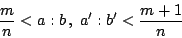
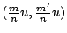

二、平行性與定量平面幾何基礎理論
（第 4 頁）
項武義
．作者任教於香港科技大學數學系
•對外搜尋關鍵字
|
二、平行性與定量平面幾何基礎理論
（第 4 頁）
項武義
|
．作者任教於香港科技大學數學系 •對外搜尋關鍵字 |
|
Eudoxus 的逼近法和逼近原理(Method and Eudoxus principle of approximation)：
當 {a,b} 不可公度時，「a:b」不是一個分數。它是一種有待理解的新興事物，不管你如何稱呼它，反正是一種當時尚未瞭解有待研究的「新量」。例如 {a,b} 和 {a',b'} 是兩對不可公度的直線段，Eudoxus 認識到「a:b」和「a':b'」這兩個「新量」之間的大小或相等關係都還有待定義！但是當 {a,b} 不可公度而 {a',b'} 可公度的情形下：
它們之間的大小關係卻又是相當清楚的，亦即： 這也就是 Eudoxus 在研究這種「新量」時第一個認識到的：
|
|
Eudoxus 比較原則：
亦即 a:b 和
在 {a:b} 和 {a':b'} 都是不可公度的情形，若有分數 則顯然應該定義前者大于後者。反之，若有分數
再者，假如這種間于 a:b 和 a':b' 之間的分數是不存在的情形，亦即對于任何分數 這也就是 Eudoxus 當年對于兩個不可公度的比值之間的大、小及相等關係的定義，即 【定義】：
為了論証上述定義的必然性，Eudoxus 開創了影響極為深遠的逼近法) (Method of Approximation) 。首先，他提出下述直觀上極為明顯的「公設」作為其論証的依據： 任給兩個直線段 a,b，不論前者有多短而後者有多長，總有足夠大的整數 N 使得 比 b 長。
【定理】：設 {a,b} 是不可公度者，對于任給正整數 n，恆存在 m 使得
証明：由上述公設，必有足夠大的 N 使得 的 N 倍要比 a 長。令 m+1 為這種 N 之中的最小者，則有 亦即
[註]：因為 n 是可以任意大的，所以上述左、右夾逼 a:b
的兩個分數之間的差額 是可以小到任意小的。[用現代的術語，即對于任給正數
，皆有足夠大的 n
使得
。] 所以 a:b 和
設 a:b 和 a':b' 對于任給分數恆具有相同的大小關係，則對于任給
n，都有相應的 m，使得

因此 a:b 和 a':b' 之間的差別要比所有 都小。不論上述差別是那一種新量，它是一個固定的量而它又比所有 都小，所以唯一的可能者就是零，亦即 a:b=a':b' 。再者，在 a:b 和 a':b' 不等的情形，則有一個分數，它和兩者的大小關係是不同的，這也就是前述比較大小的定義。
有了上述思想和逼近法，再進而重建當年希臘的定量幾何學，乃是順理成章之事，其要點在于原先僅僅對于可公度的情形具有証明的各種各樣定理和公式，作出其在不可公度的情形的「補証」。例如下述矩形公式：
在 a:u 和 b:u 都是分數時業已証明，而在 a:u 和 b:u 至少有一個不是分數（亦即不可公度）時，需要補証。 Eudoxus 對于上述矩形面積公式所作的補証，大致如下：
對于任給正整數 n ，不論它有多大，皆有 m 和 m' 使得
亦即
[ 圖 2-12 ]
如 [圖 2-12] 所示， 包含
，而且它又包含于
之中，由此可得
再者，由前述不等式的相乘，亦有 因此， 在 n 無限增大時，它是可以小到任意小的。所以 長話短說，Eudoxus 所創的逼近法不但把當年僅僅在可公度的特殊情形下具有其証明的各種各樣定理和公式，加以明確簡潔的「補証」，使得它們不論在可公度或不可公度的情形皆普遍成立，從而徹底重建了定量幾何基礎論。再者，他有鑒于曾經採用錯誤的「公設」作為幾何學的論証依據的慘痛教訓，決心下功夫徹底檢查當代的幾何學，盡其所知所能把其論証的依據，精簡壓縮到「至精至簡」；流傳至今的《歐氏幾何學》 (Euclidean Geometry) 其中絕大部分來自 Eudoxus 的著作。所以「公理化」治學的典範和人類理性文明中的第一科學的初階集其大成，實乃 Eudoxus（而並非 Euclid）的偉大貢獻。不但此也，Eudoxus 的逼近原理和方法論不但重建了定量幾何基礎論，而且也是分析學 (Analysis) 的發祥地和基本方法。他本人就把它用來証明錐體體積等于三分之一底面積乘高這個立體幾何基本公式，他的証法以及隨後 Archimedes 把它拓展到球面面積公式和球體體積公式的論証乃是積分學的雛形和範例。 如今回顧反思，將中、西古文明的定量平面幾何作一比較分析：兩者所得的基本公式大致相同，亦即矩形、三角形的面積公式，勾股弦公式（亦即畢氏定理）和相似三角形的邊長比例式，但是在基調和格局上則兩者是迥然不同的。中國古代的工程師研討幾何是為了致用，是唯用是尚的；他們在基本測量公式的推導上善用面積，的確有其獨到的長處，但是在對于空間本質理解的深度上，比之于古希臘幾何學是的確膛乎其後的了。究其原因，相信並非是在聰明才智上有任何差別，而是在格調、志趣和氣概上有所分野！例如「可公度性」乃是一個純理論性的問題；在實用的度量中，在力所能及的準確度之下的微量根本沒有其實質意義，所以不存在可不可公度這種問題。由此可見，在唯用是尚的格局下，根本是不會有此一問的，當然也不會有 Hippasus 這種深深觸及空間的連續性的發現和歷經半世紀的奮鬥才結晶而得出的 Eudoxus 逼近原理和方法論，是不？由此反思，同學們應該體認到局限中國古代幾何的發展因素乃是：「唯用是尚，則難見精深，所及不遠」；而古希臘幾何學上的成功給全人類的啟示與鼓舞則是：「若以理解大自然為志趣，並能世代相承、精益求精，則宇宙基本結構的至精至簡、至善至美是可望可及的」。
|
|
|
|
（若有指正、疑問……，可以在此 留言 或 寫信 給我們。） |
|
EpisteMath (c) 2000 中央研究院數學所、台大數學系 各網頁文章內容之著作權為原著作人所有 |
| 最後修改日期：6/19/2004 |